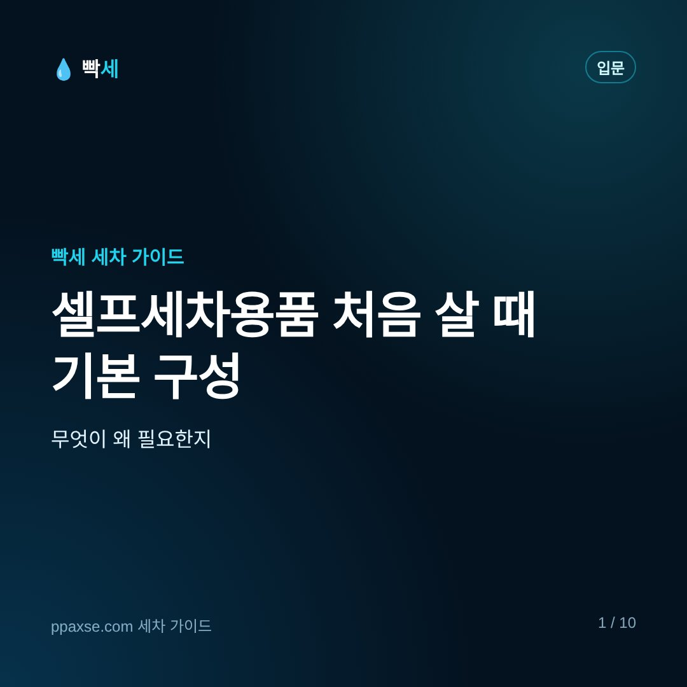
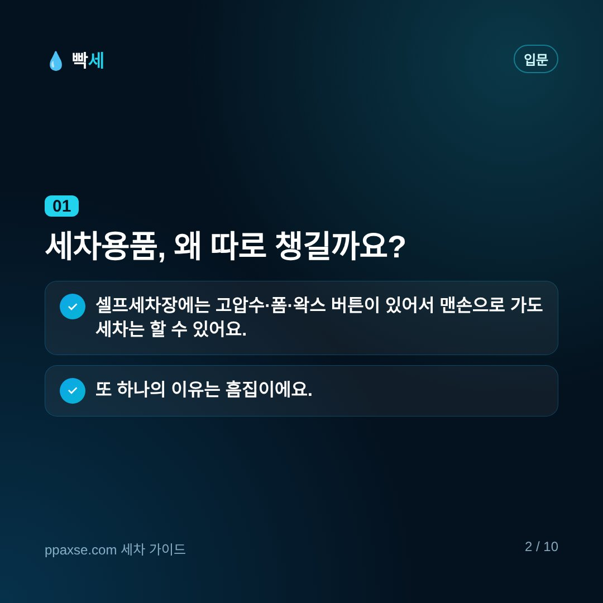
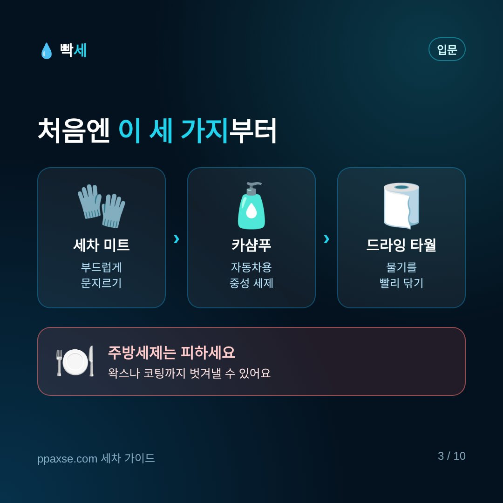
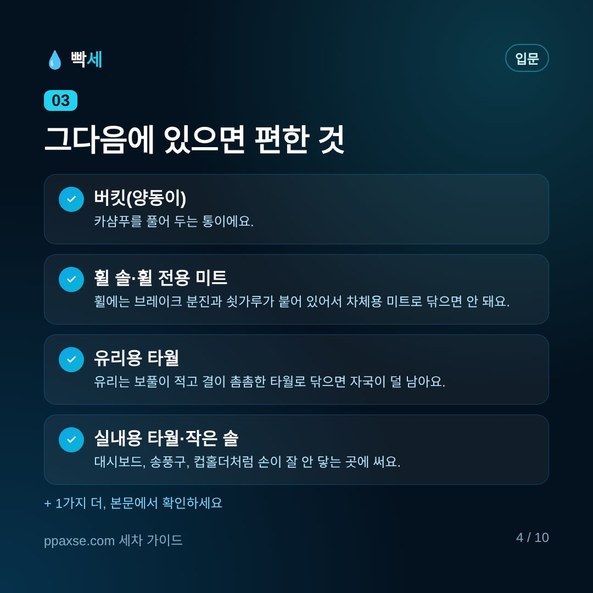
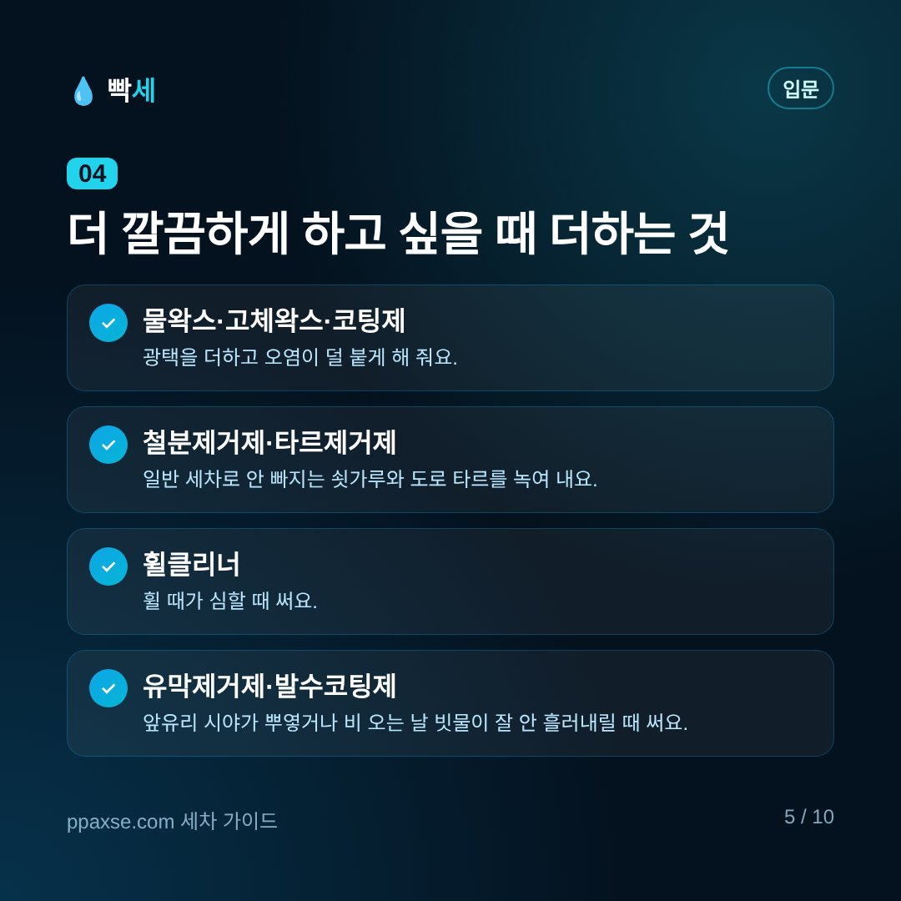
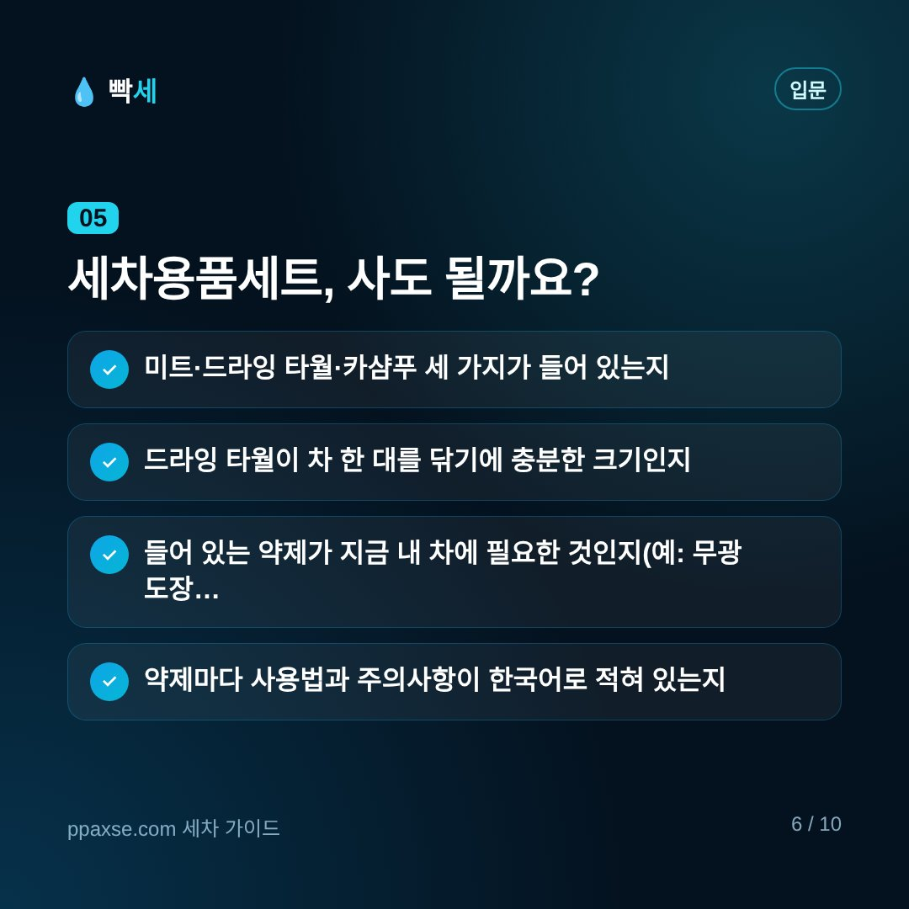
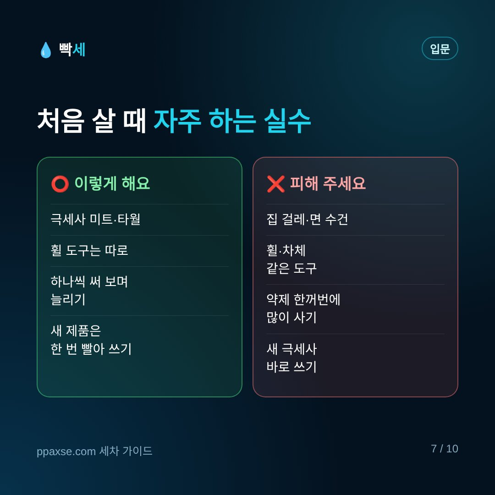

셀프세차용품 처음 살 때 기본 구성 — 무엇이 왜 필요한지
셀프세차용품을 처음 살 때는 "차체를 문지르는 것"과 "물기를 닦는 것"부터 갖추면 돼요. 세차 미트, 카샴푸, 드라잉 타월 이 세 가지가 기본이고, 휠 솔과 버킷은 그다음이에요. 왁스·코팅제·각종 클리너는 세차에 익숙해진 뒤 필요할 때 하나씩 더하는 분들이 많아요.

세차용품은 종류가 많고 이름도 낯설어서 처음엔 무엇이 꼭 필요한지 헷갈려요. 이 글은 특정 상품을 추천하지 않고, 용품마다 무슨 역할을 하는지, 왜 필요한지를 중심으로 정리했어요.
세차용품, 왜 따로 챙길까요?

셀프세차장에는 고압수·폼·왁스 버튼이 있어서 맨손으로 가도 세차는 할 수 있어요. 그런데 물만 뿌리면 얇게 붙은 때(유분·먼지 막)는 잘 안 빠지고, 물기를 그냥 두면 물자국이 남기 쉬워요. 그래서 많은 분들이 직접 문지를 도구와 닦을 도구를 따로 챙겨요.
또 하나의 이유는 흠집이에요. 도장면은 생각보다 약해서, 모래가 묻은 천으로 문지르면 가는 흠집이 생겨요. 세차용품을 고를 때 가장 먼저 볼 것은 "얼마나 잘 닦이나"보다 "얼마나 덜 긁히나"예요.
처음 살 때 기본 구성 세 가지

- 세차 미트(또는 스펀지) — 거품을 머금고 차체를 부드럽게 문지르는 도구예요. 털이 길고 부드러운 극세사 미트를 쓰는 분들이 많아요. 모래가 털 사이로 들어가 도장면에 덜 닿기 때문이에요. 바닥에 떨어뜨렸다면 그날은 차체에 쓰지 말고 깨끗이 빨아 쓰세요.
- 카샴푸 — 자동차용 세제예요. 주방세제를 쓰면 안 되느냐고 묻는 분이 많은데, 주방세제는 기름때를 강하게 빼도록 만들어져 왁스나 코팅까지 벗겨낼 수 있어요. 그래서 자동차용으로 나온 중성 카샴푸를 쓰는 분들이 많아요. 희석 비율은 제품마다 다르니 뒷면 안내를 따르세요.
- 드라잉 타월 — 세차 후 물기를 흡수하는 큰 극세사 타월이에요. 물기를 빨리 닦아야 물자국이 덜 생겨요. 타월 고르는 법과 세탁법은 드라잉 타월 고르는 법과 세탁법에 따로 정리해 두었어요.
그다음에 있으면 편한 것

- 버킷(양동이) — 카샴푸를 풀어 두는 통이에요. 하나는 샴푸물, 하나는 미트 헹굼물로 두 개를 쓰는 '투 버킷' 방식이 많이 알려져 있어요. 미트에 묻은 모래를 헹굼물에서 먼저 털어내고 샴푸물에 담그니, 샴푸물이 덜 더러워진다는 이유예요. 버킷 바닥에 모래를 가라앉히는 망(그릿가드)을 넣는 분들도 있어요.
- 휠 솔·휠 전용 미트 — 휠에는 브레이크 분진과 쇳가루가 붙어 있어서 차체용 미트로 닦으면 안 돼요. 휠 도구는 꼭 따로 두세요.
- 유리용 타월 — 유리는 보풀이 적고 결이 촘촘한 타월로 닦으면 자국이 덜 남아요.
- 실내용 타월·작은 솔 — 대시보드, 송풍구, 컵홀더처럼 손이 잘 안 닿는 곳에 써요.
- 용품 가방이나 상자 — 셀프세차장에 들고 다니기 편하고, 휠 도구와 차체 도구를 나눠 담기 좋아요.
더 깔끔하게 하고 싶을 때 더하는 것

아래 용품들은 세차에 익숙해진 뒤 필요에 따라 고르는 분들이 많아요. 처음부터 다 갖출 필요는 없어요.
- 물왁스·고체왁스·코팅제 — 광택을 더하고 오염이 덜 붙게 해 줘요. 차이는 물왁스 vs 고체왁스와 셀프세차장에서 유리막코팅제 쓰는 법에 정리했어요.
- 철분제거제·타르제거제 — 일반 세차로 안 빠지는 쇳가루와 도로 타르를 녹여 내요. 언제 쓰면 좋은지는 철분 제거·타르 제거, 언제 해야 할까요를 참고하세요.
- 휠클리너 — 휠 때가 심할 때 써요. 내 휠 표면에 써도 되는 제품인지 꼭 확인하세요.
- 유막제거제·발수코팅제 — 앞유리 시야가 뿌옇거나 비 오는 날 빗물이 잘 안 흘러내릴 때 써요. 방법은 유막제거·발수코팅 셀프로 하는 법에 있어요.
세차용품세트, 사도 될까요?

세트는 한 번에 갖추기 편하다는 장점이 있어요. 다만 세트마다 구성이 많이 달라서, 쓰지 않을 약제가 여럿 들어 있거나 정작 필요한 드라잉 타월이 작은 경우도 있어요. 세트를 볼 때는 아래를 확인해 보세요.
- 미트·드라잉 타월·카샴푸 세 가지가 들어 있는지
- 드라잉 타월이 차 한 대를 닦기에 충분한 크기인지
- 들어 있는 약제가 지금 내 차에 필요한 것인지(예: 무광 도장 차량이라면 광택용 약제는 맞지 않을 수 있어요)
- 약제마다 사용법과 주의사항이 한국어로 적혀 있는지
빡세는 처음에는 세트보다 기본 세 가지를 따로 고르는 쪽을 조금 더 권하는 편이에요. 미트와 타월은 손에 닿는 느낌이 중요해서 직접 보고 고르는 게 만족스러운 경우가 많기 때문이에요. 그렇다고 세트가 나쁜 건 아니에요. 고르는 시간을 줄이고 싶다면 위 항목만 확인하고 세트로 시작해도 충분해요. 정답이라기보다 빡세가 생각하는 해답에 가까워요.
처음 살 때 자주 하는 실수

- 집에 있는 걸레·수건으로 차체 닦기 — 면 수건은 결이 거칠고 흡수력이 낮아 흠집과 물자국이 남기 쉬워요.
- 휠과 차체를 같은 도구로 닦기 — 휠의 쇳가루가 차체에 옮겨 붙어 흠집을 낼 수 있어요.
- 약제를 한꺼번에 많이 사기 — 쓰는 순서와 방법이 익숙하지 않으면 오히려 얼룩이 남기도 해요. 하나씩 써 보며 늘리는 게 좋아요.
- 새 극세사 제품을 바로 쓰기 — 새 제품은 실밥이나 보풀이 있을 수 있어 한 번 빨아 쓰는 분들이 많아요. 세탁 방법은 제품 안내를 따르세요.
내 주변 셀프세차장 찾기
용품을 갖췄다면 이제 쓸 곳이 필요해요. 셀프세차장 처음 가는 날의 준비물과 순서는 셀프세차장 처음 가는 날에 정리해 두었어요. 개인 용품을 쓸 수 있는지, 실내 베이가 있는지 같은 정보는 빡세 지도에서 이용자들이 함께 채워가고 있어요. 지역별 세차장 모음에서 우리 동네 셀프세차장을 찾아보고, 다녀온 곳이 있다면 한마디로 알려 주세요.
셀프세차·노터치·손세차를 종류별로 골라 보고, 폼건·온수·하부세차 같은 시설 정보도 확인할 수 있어요.
🗺️ 세차장 지도 열기✏️ 자주 가는 세차장에 한마디 남기기🎁 한마디를 남기면 가입 없이도 매주 기프티콘 추첨에 응모돼요.